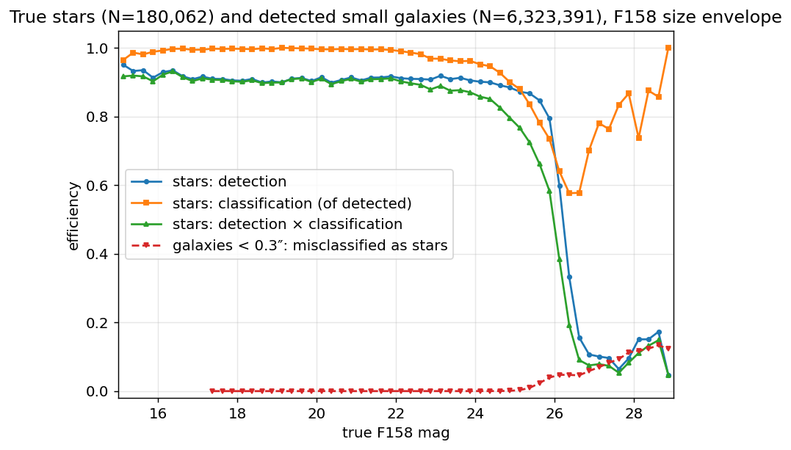
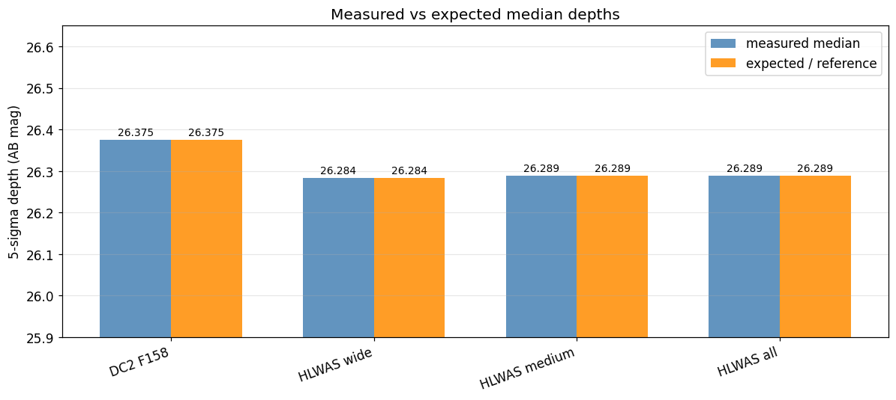
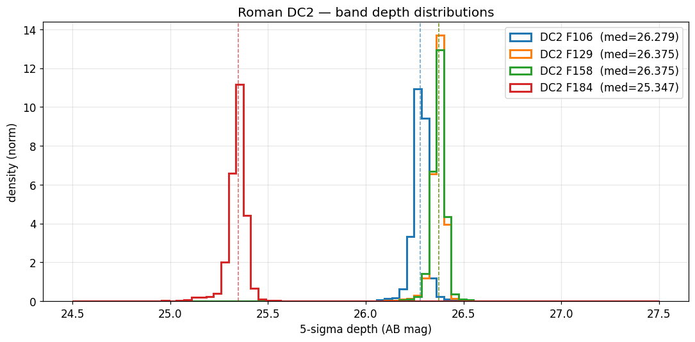

Selection-Function Derivation Methodology#
This technote documents how the streamobs survey selection-function products are derived from an image-level survey simulation: the stellar detection-and-classification completeness, the galaxy misclassification rate, the photometric-error model, and the magnitude-limit (depth) maps, together with the conventions that tie them together.
It is written survey-agnostically. The products it describes were first derived
for Roman from the Roman–Rubin DC2 mock (see :doc:roman_dc2), and the same recipe
is intended to be re-applied to re-derive the LSST and DES products
self-consistently. Per-survey numbers (depths, bands, extinction coefficients,
saturation) live on the per-release data pages; the method lives here.
What streamobs needs#
For each survey/release, the injector consumes a small set of tabulated products, all keyed to a single internal depth convention so they can be applied at any sky position and translated between footprints of different depth:
Product |
File pattern |
Drives |
|---|---|---|
Stellar completeness vs |
|
detection + classification probability |
Photo-error (sample) vs |
|
the magnitude noise draw |
Photo-error (catalog) vs |
|
the reported error / S/N cut |
Magnitude-limit (depth) maps |
|
the local depth at each pixel |
Galaxy misclassification vs |
|
stellar contamination (derived; future-consumed) |
The unifying variable is
delta_mag = mag_true − maglim(pixel)
i.e. magnitude relative to the local 5σ depth. Tabulating against delta_mag
rather than absolute magnitude makes every curve portable across regions (and
surveys) of different depth, under the single assumption that the selection function
depends on magnitude only through the local depth. Maps and tables are released in
one convention (see Depth maps below); substituting a shallower or deeper map
translates the curves to the corresponding depth.
Header spelling note. The completeness CSV column is named
classification_eff. The loader also accepts the legacy misspelledclassifiction_effcolumn name for older/Zenodo data packages that pre-date this correction.
Column namespacing. True-magnitude columns use the survey name only (
roman_F158_true; true mags are release-independent), while observed/error/flag columns use the full{name}_{release}namespace (roman_dc2_F158_obs,roman_dc2_flag_observed), so multiple releases can coexist in one catalog.
The matched detection→truth catalog#
Every product below starts from a matched detection→truth catalog: one row per catalog detection, carrying the truth payload (true magnitudes, the star/galaxy label, the truth ID) for the true object it was matched to. The truth side is what makes the products validated rather than merely measured — see Validation & audits.
The matching recipe (following the source simulation’s own prescription, e.g. Troxel et al. 2023 for Roman):
Detect + photometer on the simulation’s detection image (for Roman, a multi-band median coadd), producing a per-tile detection catalog with positions,
mag_auto/magerr_autoper band, shape moments, flags, and a scalar star/galaxy score.Positionally match each detection to truth objects within a fixed radius (1″); where several qualify, take the closest in magnitude among the nearest few — a detection-centric match that assigns a blend to its single dominant source, keeping the observed↔true magnitude relation clean at the cost of under-counting blend members.
Tag the analysis selections used downstream (see next).
This per-tile positional join is the tractable, parallelizable core; the heavy
single-epoch index files are not needed for catalog-level selection functions.
For the practical Roman recipe (file formats, tile layout, schema), see the
[combine plan archived in artifacts/roman_hlwas/roman_dc2_combine_plan.md].
Analysis selections#
Three selections define the sample the products are measured on:
flags == 0— drop any detection carrying a SExtractor flag (blends, edges, saturation, contaminated photometry). This is the cut an observer applies to obtain a pure sample; it is the origin of the bright-end completeness plateau below unity (a fixed fraction of bright stars are flagged because they are blended with a neighbour), which is a property of the adopted cut, not the instrument.true S/N > 5 in the reference band. Detection is treated as single-band: a source is “detected” when its forced reference-band photometry reaches a true S/N > 5. Because reported errors can underestimate the real noise (see Photo errors), the threshold on the reported error is set using a truth-measured error inflation factor rather than the nominal
magerr = 2.5/ln10/5 ≈ 0.2171.a positional match to a true object.
The S/N > 5 cut is owned by the efficiency curves. It is baked into the selection-function products at derivation time. The injector must not re-apply a reference-band S/N cut on top of them — doing so would double-count the detection probability.
Why the curves are measured on the detected population (validated 2026-07)#
The injector draws the detection flag (from the efficiency curves) and the photometric noise (from the photo-error curves) independently. Under that architecture the curves must describe the population they are applied to — the S/N > 5-detected one — and this convention was validated quantitatively against the alternatives on both the Roman and LSST DC2 matched catalogs:
Feeding the unconditioned (“no-cut”) error curve instead inflates the detected population’s photometric scatter by up to +0.24 dex (Roman) / +0.34 dex (LSST) near the survey limit, and produces “detected” objects whose implied errors exceed the S/N = 5 threshold — objects that cannot exist in a real catalog (100% of the faintest detected bin).
A correlated per-object error draw (detection made deterministic given a drawn reported error) was prototyped and not adopted: the naive one-factor noise model deviates from the real detected scatter by 0.16–0.21 dex, and closing that gap requires additional calibrated products with no guaranteed gain over the present convention, which matches the detected population by construction.
The same conditioning applies to every curve the injector evaluates for detected objects:
classification_effand the galaxy-misclassification curve keep detection in their denominators (removing it changes nothing brightward of the maglim — < 0.015 — and biases the faint tail, where the conditional correctly rises for the well-measured survivors of a hard S/N cut).
The supporting analysis lives in the local evidence notebooks
(roman_photoerr_detection_correlation / lsst_photoerr_detection_correlation,
built by the gitignored build_photoerr_correlation_nb.py generators).
Known, unmodeled photometric bias of the DC2 mock. The Roman DC2 MAG_AUTO
photometry is systematically fainter than truth for detected true stars —
median (obs − true) grows from +0.10 mag at delta_mag = −8 to +0.43 mag
at delta_mag ≈ −0.4 (SExtractor aperture flux loss; the LSST DC2 PSF
photometry control is unbiased at < 0.006 mag over the same range). No product
models this offset: flight Roman photometry will be PSF-based, so it is treated
as a mock artifact. Corollary: injected observed magnitudes should not be
compared against raw DC2 MAG_AUTO CMDs without accounting for the offset, and
the Roman products should be re-derived from PSF photometry when it becomes
available (expect a slightly smaller error-inflation factor and ~0.1–0.2 mag
deeper truth-anchored depths).
Star classification: the single-band size envelope#
Rather than a scalar class_star/extendedness threshold, stars are classified
with a single-band size envelope. A detection is a star iff
lower(mag) < size_sb < upper(mag)
where size_sb = √λ₁ · 3600″ is the windowed semi-major axis (larger eigenvalue of
the per-band windowed second-moment matrix). The single-band second moments are used
because detection runs on a combined image, so the combined-depth awin_world /
class_star are not single-band quantities — and a single-band morphology is what an
injected single-band stream star can be tested against.
Working in L = log10(size), the band is symmetric about the per-magnitude
stellar locus L0(mag) with half-width Δ(mag) (dex). Δ(mag) is tuned per
magnitude bin to a fixed purity target (0.875, the DES Y6 0≤EXT_XGB≤1
“complete” stellar operating point of
Bechtol et al. 2025), capped at the bright end
by the stellar log-size scatter (N_SIG · σ_L), forced single-peaked, PCHIP-splined,
and frozen faintward of a freeze magnitude at a fixed log offset — so the
selection stays as complete as possible past the magnitude where size no longer
separates stars from galaxies, rather than tightening into the noise. The upper
boundary additionally flares toward bright magnitudes to retain bright,
slightly-resolved stars whose measured size scatters above the locus.
The envelope reaches the same purity/completeness as a per-magnitude-optimized scalar threshold while needing only the single reference band, and clearly beats a fixed scalar cut whose purity falls away at the faint end.
One source of truth. The classifier is implemented once, in
scripts/roman/roman_star_classifier.py(build_env_classifier), and imported by both the selection-function generator and the galaxy-misclassification builder, so the two cannot drift. Re-deriving for another survey means re-fitting this same envelope on that survey’s matched catalog.
Galaxy misclassification#
Stellar contamination is characterized with the same classifier: among true
galaxies that are detected and compact (size below a fixed threshold, default
0.3″), the fraction misclassified as stars, in bins of delta_mag. The compact-size
input is a single swappable knob (SIZE_SOURCE): the interim proxy is the measured
reference-band size; the upgrade is a true galaxy size joined from the parent
extragalactic catalog (for Roman/DC2, cosmoDC2 size_true by cosmodc2_id — see the
hook in build_roman_galaxy_misclass.py). The builder also saves a merged
LSST↔Roman table (truth + observed columns from both surveys, namespaced by
origin) for downstream background-distribution and matched-filter work. The
misclassification curve is a derived product; the injector does not yet consume it
(a future PR will add background distributions + matched-filter maps).

Example (Roman DC2): true-star detection and classification efficiency with the misclassification rate of detected compact (<0.3″) true galaxies on the same axes — below 1% brighter than F158 ≈ 25.5, rising to ~5% toward the faint end.
Photometric errors#
Because the truth is available, the reported photometric uncertainties are
validated directly: for true stars, the scatter of (observed − true) magnitude
should match the reported magerr. When it does not — for the Roman DC2 mock the
truth-based scatter runs a flat factor ≈2 above the reported errors in every band,
the signature of underestimated correlated noise in resampled median coadds — the
error model is built from the truth-based scatter, not the reported errors.
streamobs uses a two-curve error model (Survey.get_photo_error):
sample curve (
*_photoerror_<band>.csv) — the truth-based scatter of (obs − true); drives the noise draw applied to injected magnitudes.catalog curve (
*_photoerror_<band>_catalog.csv) — the median reported error; written as the catalogmagerrand used for the S/N cut.
Both tabulate log10 σ against delta_mag. The sample population is true stars
that pass the star classification — the population an injected stream star follows.
(An observationally star-classified sample would be galaxy-dominated at the faint end
and inflate the apparent scatter.)
Afterburner (manual cleanup, saved)#
Binned statistics carry small-sample scatter in the last few faint bins (reversals, spikes) that should not propagate into the runtime curves. The generator therefore applies a lightweight afterburner:
Raw curves (
*_raw.csv) — unmodified binned outputs — are written every run as a provenance record.Corrections are loaded from a tracked YAML (
config/surveys/roman_photoerror_corrections.yaml) so every manual edit is attributed and reversible. The implemented rule,clamp_faint, floorslog_mag_errto a fixed value for all bins at/beyond a chosendelta_mag_min(e.g. holding the faint-end noise at its last well-sampled value instead of letting it wobble).Cleaned curves (the runtime filenames the config points at) — raw with corrections applied.
To adjust the cleanup, edit the YAML and re-run; the raw files preserve the underlying measurement.
Depth maps#
Per-band magnitude-limit maps are computed on a HEALPix grid (nside=1024, ring) with the desqr recipe:
cut the bright end and
mag < 30;estimate the global slope of
log10(magerr)vs mag from nearest-neighbour pairs (KDE peak of the pairwise ratio);per object, extrapolate to the magnitude where it would reach the threshold S/N (
magerr = 2.5/ln10/snr);take the median per pixel;
truth-anchor the absolute scale: because the desqr extrapolation runs on the reported errors (which can be too small), each band’s map is shifted so its median equals the magnitude where the truth-based scatter reaches S/N = 5. The desqr machinery supplies the (error-factor-immune) spatial structure; the truth supplies the absolute depth. With this anchoring the photo-error model evaluates to σ = 0.217 (S/N = 5) at
delta_mag = 0by construction — “maglim” means S/N = 5 in the same truth-based sense everywhere.
The depth sample is the same true-star-passing-classification population as the photo-error model, so the maps and the error model describe one population.
Anchor-sample footnote (2026-07). The anchoring in step 5 is conceptually a no-cut quantity (the magnitude where the full population’s truth scatter reaches S/N = 5), but the current generator’s anchor sample includes the detection cut. The measured effect is ≲ 0.01 mag (the no-cut sample curve crosses S/N = 5 at
delta_mag = +0.008instead of exactly 0) — far below the 0.25-mag depth binning — so the fix (droppingdet_okfrom the anchor sample) is deferred to the next product regeneration rather than regenerating for it.
Exposure-scaled quasi-depth (Option B)#
When a survey footprint has no full image simulation but does have an exposure-time map (e.g. the real Roman HLWAS tiers), depth is obtained by scaling the truth-anchored reference depth by photon-noise √t S/N:
depth(pix) = REF_DEPTH + 1.25 · log10( t(pix) / REF_EXPTIME )
where REF_DEPTH is the median of the truth-anchored reference maglim map and
REF_EXPTIME is the reference simulation’s per-pixel exposure time. The 1.25 factor
is 2.5 × 0.5, the limiting-magnitude response to √t. This Option B anchors all
tiers to the same truth-anchored reference (not to per-tier ETC depths of mixed
vintage), so the maps land exactly on the depth scale the delta_mag-keyed tables
require, and inter-tier comparisons are self-consistent. It assumes background-limited
exposures (read-noise makes the shortest exposures slightly shallower than predicted).
Validation & audits#
Already validated (this PR)#
Truth-based photo-error validation. The reported errors are checked against the scatter of (obs − true) for true stars per band; the constant ≈2 discrepancy in the Roman DC2 mock is why the error model and depth maps are truth-anchored rather than taken at face value. Figure:
error_validation.pngon :doc:roman_dc2.Depth-map validation notebook (
notebooks/roman_depth_validation.ipynb, figures under_static/roman_depth_validation/). It confirms:DC2 band ordering matches the expected physics: F129 ≈ F158 (26.375), F106 = 26.279 < F158, F184 = 25.347 < F106. ✓
DC2 4-band truth-anchored medians 26.28 / 26.38 / 26.38 / 25.35 (F106/F129/F158/F184) with tight 16/84 spreads (≈±0.03 mag).
HLWAS Option-B medians match the formula to <0.001 mag: wide 26.2842 (expected 26.2840), medium 26.2894, all 26.2894 — confirming the maps are on the DC2-relative convention the shared tables need.
Tier consistency in the triple-overlap region:
all ≥ mediumandall ≥ widehold for 100% of pixels.Footprint coverage: DC2 ≈ 16.4 deg² (fsky 4×10⁻⁴); HLWAS wide 3372 deg², medium 2882 deg², all 5878 deg².

HLWAS measured map medians vs the Option-B predicted depths: agreement to <0.001 mag confirms the maps are on the DC2-relative convention the shared tables require.

DC2 per-band truth-anchored depth histograms (nside=1024); the tight spreads and the band ordering F184 < F106 < F129 ≈ F158 match the expected physics.
Test suite.
tests/test_roman.py(26 tests) covers loading each Roman release,{name}_{release}column namespacing on inject, Vega→AB offsets, the two-curve photo-error model, completeness behaviour (bright ≳ plateau, zero below saturation), and the legacyclassifiction_effmisspelled-header fallback.tests/test_surveys.pyregistersroman/dc2+ the three HLWAS tiers inSURVEY_REGISTRY(skipped gracefully if a config is absent).
Reference benchmarks to check against (external truth)#
These are the published/derived numbers a re-derivation should reproduce. The first two are external Roman benchmarks from Troxel et al. 2023 and are listed as audit targets (not yet measured in-repo):
Detection completeness: ≈ 98.9% of
r < 29stars detected at S/N > 5 before flag cuts (Troxel et al.). Ourflags == 0plateau sits at ~0.91 by design (the flagged-blend fraction); the pre-flag detection rate should approach the Troxel figure.H158 80%-completeness cutoff ≈ 25.42 (Troxel et al.) — the combined detection×classification curve should cross 80% near this magnitude at reference depth.
5σ point-source depths ~26.9 (F106/F129/F158) / 26.2 (F184) AB (reference HLIS). The truth-anchored
mag_autodepths come out ~0.5–0.85 mag brighter (26.38…) because they describe what catalogmag_autodelivers in true-magnitude space, not optimal-PSF photometry — this gap is expected and documented, not a bug.
Recommended quantitative audits (future)#
Concrete checks to run on the streamobs implementation (not the derivation). All are cheap relative to the derivation and would tighten confidence in the injector:
Injection round-trip / luminosity-function recovery. Inject a stream with a known input luminosity function into a release, run the recovered catalog back through the same completeness curve, and confirm the recovered LF matches the input × completeness within Poisson error. Status: recommended.
Detection/classification efficiency vs benchmarks. Measure the injected-then- recovered detection and classification efficiency vs true magnitude and compare to the Troxel benchmarks above (pre-flag detection ≈ 98.9% at r<29; H158 80% ≈ 25.42). Status: recommended.
Photo-error closure. Inject stars at known true magnitudes, measure the scatter of (recovered − true), and confirm it reproduces the input
*_photoerror_<band>.csvsample curve as a function ofdelta_mag. Status: recommended.Cross-survey recovery on a common stream. Inject one synthetic stream into both a Roman release and an LSST release and compare recovered surface densities / selection in the overlap, to confirm the two selection functions are mutually consistent once both are re-derived by this methodology. Status: recommended (gated on the LSST re-derivation).
Convention closure (non-circular). The depth-validation notebook’s “convention check” currently re-derives the expected value from the same formula used to build the map (circular). A real check would compare the truth-anchored DC2 F158 median against an independent depth estimate (e.g. the count-turnover magnitude of the matched catalog) and confirm agreement. Status: recommended.
Re-deriving for another survey#
To re-derive LSST/DES products self-consistently:
Build the matched detection→truth catalog for that survey (same positional-match recipe, that survey’s bands).
Re-fit the size envelope (
roman_star_classifier.build_env_classifier) on the new catalog — same purity target and freeze logic.Re-measure the two photo-error curves and the truth-based depth anchor; clean the curves via the YAML afterburner.
Emit the
delta_mag-keyed completeness / photo-error CSVs and the truth-anchored maglim maps in the shared convention (use theclassification_effcolumn header).Register the release in
config/surveys/andSURVEY_REGISTRY, and add a thin per-release data page that references this methodology page for the “how”.